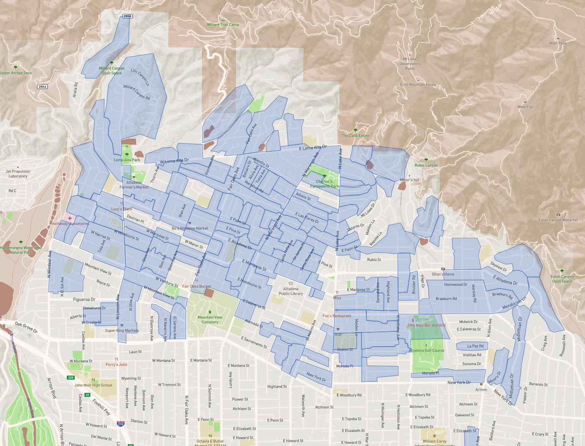

A community engagement strategy for the Altadena rebuild
A collaboration of Altadena Village · CoLab · Alting · Altagether
Presented to CAPS · May 21, 2026
Why we’re here
Altadena’s commercial and public spaces are being rebuilt. There’s no process for the community to shape what they become and see the impact of their input.
Why we’re here
No coordination across scopes, entities, or schedules
Scope
Entity
2026
2027
Mar
Apr
May
Jun
Jul
Aug
Sep
Oct
Nov
Dec
Jan
Feb
Mar
Apr
May
Jun
Jul
Aug
Sep
Oct
Nov
Dec
CIP
LA County Public Works
Survey
Comment period TBD
Land use
LA County Regional Planning (WSGVAP)
Refresh cycle TBD
Sewer
LA County Sanitation
Ongoing rebuild interaction
Water
Las Flores · Lincoln · Rubio Cañon
Ongoing restoration & planning
Stormwater
LA County Flood Control
Stormwater windows TBD
Energy
Edison / SCE
Undergrounding & restoration planning — ongoing
Gas
SoCalGas
Gas restoration ongoing
Schools
PUSD
Decisions TBD
Multi-benefit
LA County Parks & Rec
Parks & green corridors TBD
Urban canopy
LA County · TreePeople · Altadena Bloom
Urban canopy restoration TBD
Private rebuild
Outside investments & developers
Active rebuild projects ongoing
New permits & projects TBD
Outreach
Paradigm (for Edison)
Engagement windows TBD
Master plan
Toole (for LA County)
Master plan in progress
No engagement scheduled
And the PFA
The Public Financing Authority is required to meet every two months since January — but hasn’t yet.
What’s missing
Five gaps — and the values that close them
01
Proximity
Neighbors know what their block needs — but there’s no channel for that knowledge to land in County decisions.
02
Local agency
Commercial owners have coordinated a shared vision, but no defined path to the County’s infrastructure rollout.
03
Coordination
Agencies plan in parallel, on separate schedules, with no shared way to coordinate.
04
Visibility
Plans, decisions, and deviations are hidden until they’re locked in — and community input disappears into a black box. Visibility goes both ways.
05
Trauma-informed
No engagement design built for a community that’s been through this much.
“Right now recovery feels like attempting to have a sip of water from eight fire hoses that are going on full blast. It’s impossible.”
Mike Tuccillo · Altadena resident & block captain
The network we build on
150+ Altagether blocks across Altadena

Each shaded area is a block with a captain — the existing distribution and facilitation network this process runs on. Placeholder image
What we’re proposing
Five steps — information flows down, consensus flows up
01
↓Scope
Project owners define their decision within one of three scopes:
The record goes public — tracked on a dashboard, visible to all stakeholders.
WhoAll stakeholders
02
↓Training & Distribution
Through existing channels — Altagether’s 150+ block captains and the commercial-owner network, trained to facilitate with on-call backup.
WhoAltagether + CoLab (training)
04
↑Aggregation
Block deliberations compile into a coherent record — organized by area, corridor, zone, and by the project owner’s own categories. Private dialogue stays private; outcomes become public.
WhoCaptains record · synthesized by AI
03
⟳Facilitating Discussion
Altagether Block Captains facilitate local input sessions, with community support, resources and clear guidelines.
The pilot tests Scope A — getting block-by-block feedback into the Recovery Master Plan before it locks. Fair Oaks North & South residential blocks plus commercial blocks, anchored by a community church. Placeholder image
Where we start
Fair Oaks Corridor — Pilot
01
↓Scope
Scope A · Recovery Master Plan / CIP (Mobility · Stormwater · Sewer · Water · Energy · Multi-Benefit)
05
↑Shared record
Structured packets to CIP — manually plotted on map. No automated dashboard yet.
02
↓Training & Distribution
Altagether’s 150+ block captains and the commercial-owner network, trained to facilitate discussion.
04
↑Aggregation
Compiling decisions and feedback through Google Form and AI notetakers · per-category compilation. Manual aggregation — no dashboard yet.
03
⟳Facilitating Discussion
Ensure distribution of customized Survey, information sessions, discussion groups, Zoom calls — with support from experts and county resources.
Fair Oaks is the hand-hacked version — the framework works while we build the automated tools (real-time dashboard, auto-aggregation) once funded.
Where we start · Work in progress
Fair Oaks Corridor — Pilot
2026
2027
Mar
Apr
May
Jun
Jul
Aug
Sep
Oct
Nov
Dec
Jan
Feb
Mar
Apr
May
Jun
Jul
Aug
Sep
Oct
Nov
Dec
CAPS coalition co-signToday
May 21
ATC Land Use CommitteeBriefing & ratification
Jun–Jul
EIFD advocacyAt PFA hearings
Funding push
Delivery guidelines + Captain toolkitv1 by end of June, then iterate
Altadena BloomTy GarrisonAltadena Chamber of CommerceJudy MatthewsAltadena CollectiveChris CorbettAltadena GreenStephanie Landregan · Wynn WilsonAltadena HeritageHans Allhoff · Michele ZackAltadena Town CouncilDorothy Wong · Morgan WhirledgeARRCAnders CoreyCCARHans AllhoffDena HiveDorothy WongLeague of Women VotersJoan RibackNeighbors Building a Better AltadenaKaren GibsonNOMASteve LewisPUSD School BoardJennifer Hall LeeSteadfastJodi McLaughlin · Hans AllhoffWRTTTy Garrison
What we want from you today
Co-sign and carry it forward.
Today
Buy-in on the overall approach
Next steps
TodayCAPS coalition co-signs the framework — or surfaces feedback that feeds the next phase
Today – Jun 4Feedback & refinement — informal conversations from this room outward; integrate inputs from CAPS, ATC, and community partners
Late MayBuild out the full structured proposal — expand owners, milestones, dependencies, and deliverable specs
JunOutreach & circulation — share the plan with EFC, ACONA, ART, Altadena Rising, My Tribe Rise, Hands in the Soul, broader CAPS coalition, ATC, partners, and community
End of JuneWorking group publishes v1 delivery guidelines and block-captain toolkit
JuneATC Land Use Committee briefing · first captain training cohort scheduled
Jul – DecPFA hearings: advocate for an EIFD earmark for engagement infrastructure
Fall 2026Fair Oaks corridor pilot launches using the guidelines